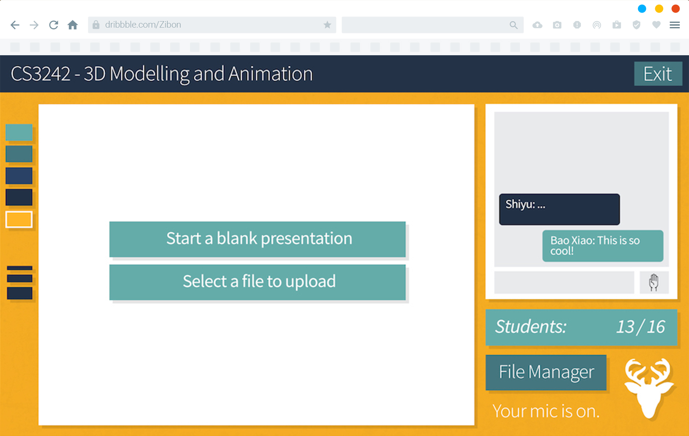
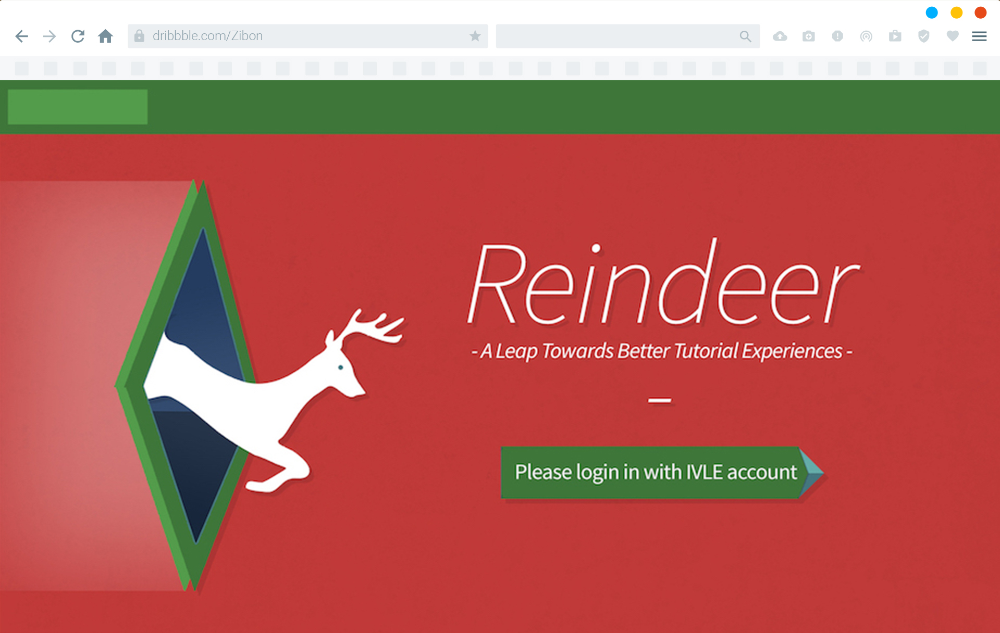

Reindeer
HCI / Media Techonology / Web
When we ask people about what platform do they use to conduct or attend a tutorial online, apps that are mostly mentioned are "Skype", "Google Hangouts" or even "Facebook". These apps are great, but they are NOT designed dedicated for conducting online tutorials. To solve this problem, we need a brand new platform.
That's where Reindeer comes in. It aims to provide the ultimate solution to help students in National University of Singapore to attend tutorials online, regardless of what type of tutorials they are attending. The platform should be substantially simple to use, yet flexible enough to cater tutorials with different needs.
Check code repository: @github
The integrated experience
The system seemless integrates with NUS learning management sytem IVLE (The Integrated Virtual Learning Environment), when students log in with their matriculation account, all the modules are imported automatically.
Under each module, students can upload their tutorial materials, which can be presented during the session.

Just like sitting in the class room
What's so good about attending a tutorial physically? Because you got a white board to draw. Why professors bring laptops to the class? Because they love powerpoints. So Reindeer combines them TOGETHER!
In the virtual tutorial room of Reindeer, we combined the powerpoint with the white board function. Presenter can show the slides and mark on it freely with their iPad. (an iPad?). YES you can use an iPad in parallel with desktop portal logged in. The iPad will become a drawing board and synchronized with the class.
And thanks to the WebRTC technology, we can live stream your voice to the class room. However live streaming is expensive and requires a LOT of server power and bandwidth. We managed to get it work in a LAN environment. So long as you are inside campus sub-network for instance your dormintory, you can use the voice function! A chatting box is provided in case the student is outside of campus and access from the World Wide Web.

Why not have some fun?
Like all the online games, Reindeer would change its theme on special dates.
Christmas? Do you see a reindeer flyes over the moon with packages of gifts?
Project Showcase
The project made its first demo at NUS School of Computing semester showcase in 2016.
During the demo, we demonstrated the usage of live chatting room that has synchronized presentation board with slides and drawing functions.
- Tributes to all my dear teammates -
BAO Xiao | HUANG Liuhaoran | Huang Ziyu | PAN Shiyu
2016, CHEN DI